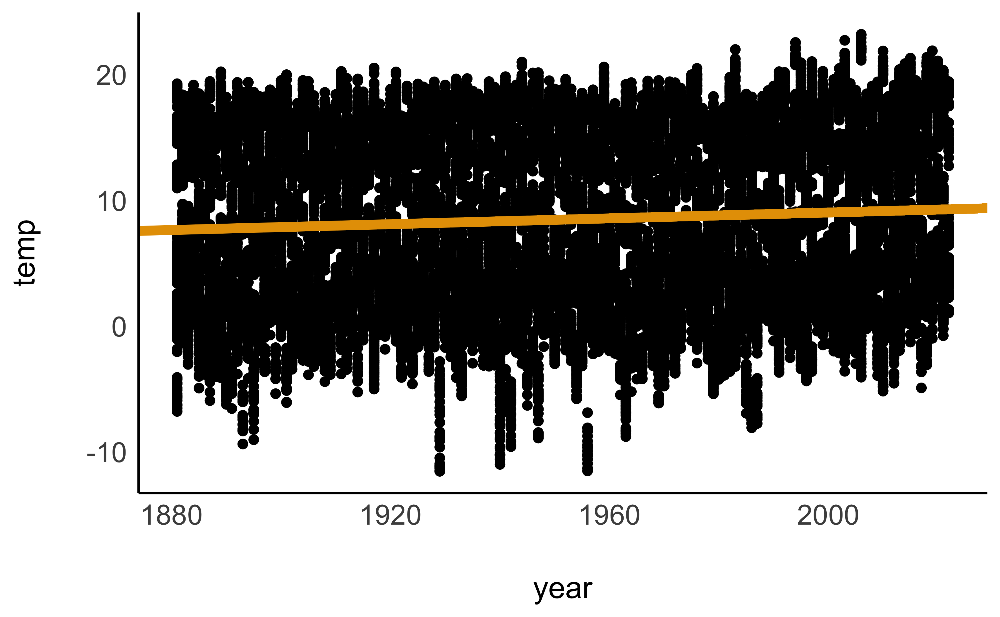
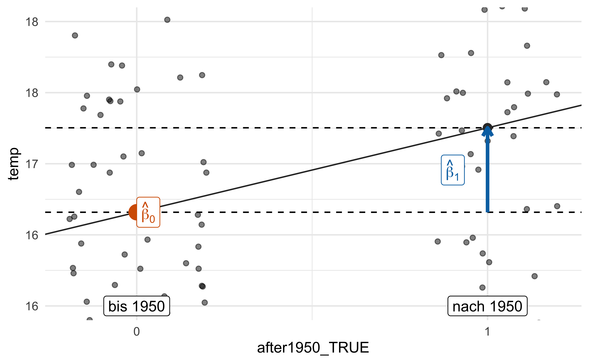
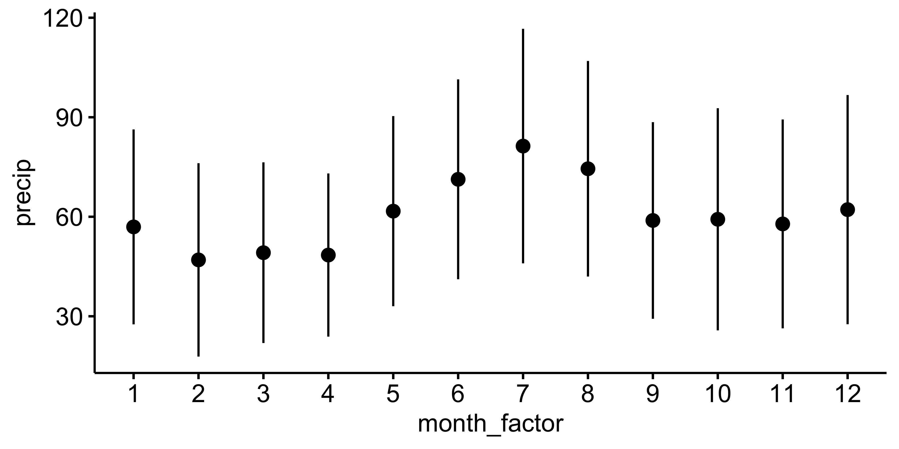
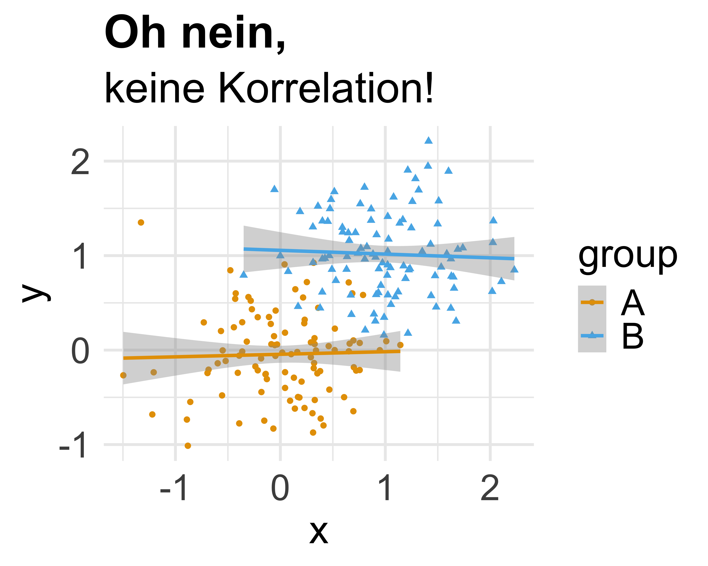

11 Geradenmodelle 2
11.1 Lernsteuerung
11.1.1 Standort im Lernpfad
Abb. Abbildung 1.2 zeigt den Standort dieses Kapitels im Lernpfad und gibt damit einen Überblick über das Thema dieses Kapitels im Kontext aller Kapitel.
11.1.2 Lernziele
- Sie können Regressionsmodelle für Forschungsfragen mit binärer, nominaler und metrischer UV erläutern und in R anwenden.
- Sie können Interaktionseffekte in Regressionsmodellen erläutern und in R anwenden.
- Sie können den Anwendungszweck von Zentrieren und z-Transformationen zur besseren Interpretation von Regressionsmodellen erläutern und in R anwenden.
- Sie können Modelle nutzen, um Vorhersagen anhand neuer Daten zu erstellen.
11.1.3 Benötigte R-Pakete
11.1.4 Benötigte Daten
mariokart <- read.csv("https://vincentarelbundock.github.io/Rdatasets/csv/openintro/mariokart.csv")11.2 Mighty Regression
Lineare Modelle1 sind ein altes, aber mächtiges Werkzeug. Sie gehören immernoch zum Standard-Repertoire moderner Analysten.
Beispiel 11.1 (Wie gut kann man Ihre Persönlchkeit auf Basis des Facebook-Profils vorhersagen?) In einer Studie mit viel Medienresonanz untersuchten Kosinski, Stillwell, und Graepel (2013), wie gut Persönlichkeitszüge durch Facebook-Daten (Likes etc.) vorhergesagt werden können. Die Autoren resümieren:
We show that easily accessible digital records of behavior, Facebook Likes, can be used to automatically and accurately predict a range of highly sensitive personal attributes including: sexual orientation, ethnicity, religious and political views, personality traits, intelligence, happiness, use of addictive substances, parental separation, age, and gender.
Die Autoren berichten über hohe Modellgüte (\(r\)) zwischen den tatsächlichen persönlichen Attributen und den vorhergesagten Werten Ihres Modells, s. Abbildung 11.1. Das eingesetzte statistische Modell beruht auf einem linearen Modell, also ähnlich zu dem in diesem Kapitel vorgestellten Methoden.\(\square\)

11.3 Wetter in Deutschland
Beispiel 11.2 (Wetterdaten) Nachdem Sie einige Zeit als Datenanalyst bei dem Online-Auktionshaus gearbeitet haben, stand Ihnen der Sinn nach ewtas Abwechslung. Viel Geld verdienen und Ruhm und Anerkennung sind ja schon ganz nett, aber Ihnen viel ein, dass Sie ja zu Generation Z gehören, und daher den schnöden Mammon nicht so hoch schätzen sollten. Sie entschließen sich, Ihre hochgeschätzten Analyse-Skills für etwas einzusetzen, das Ihnen sinnvoll erscheint: Die Analyse des Klimawandels.
Beim Deutschen Wetterdienst, DWD haben Sie sich Wetterdaten von Deutschland heruntergeladen. Nach etwas Datenjudo, auf das wir hier nicht eingehen wollen resultiert ein schöner Datensatz, den Sie jetzt analysieren wollen2:
wetter_path <- "https://raw.githubusercontent.com/sebastiansauer/Lehre/main/data/wetter-dwd/precip_temp_DWD.csv"
wetter <- read.csv(wetter_path)Ein Data-Dictionary für den Datensatz können Sie hier herunterladen.
Ein Data-Dictionary (Codebook) erklärt einen Datensatz. Oft bedeutet das, das für jede Spalte der Datentabelle erklärt wird, was die Spalte bedeutet.\(\square\)
In Tabelle 11.1 und Abbildung 11.2 kann man sich die Daten en Detail anschauen (Temperatur und Niederschlag im Zeitverlauf).


Wetterdaten für Deutschland
Hervorragend!
An die Arbeit 💪
11.3.1 metrische UV
Sie stellen sich nun folgende Forschungsfrage:
🧑🎓 Um wieviel ist die Temperatur in Deutschland pro Jahr gestiegen, wenn man die letzten ca. 100 Jahre betrachtet?
Die Modellparameter von lm_wetter1 sind in Tabelle 11.2 zu sehen.
lm_wetter1 <- lm(temp ~ year, data = wetter)
parameters(lm_wetter1)Modellparameter von lm_wetter1
Laut Ihrem Modell wurde es pro Jahr um 0.01 Grad wärmer, pro Jahrzehnt also 0.1 und pro Jahrhundert 1 Grad.
🧑🎓 Das ist sicherlich nicht linear! Vermutlich ist die Temperatur bis 1950 konstant geblieben und jetzt knallt sie durch die Decke!
👨🏫 Mit der Ruhe, das schauen Sie sich später an.
Das Modell, bzw. die Schätzungen zu den erwarteten Werten, kann mich sich so ausgeben lassen, s. Abbildung 11.3, links. Allerdings sind das zu viele Datenpunkte. Wir sollten es vielleicht anders visualisieren, s. Abbildung 11.3, rechts. Dazu aggregieren wir die Messwerte eines Jahres zu jeweils einem Mittelwert.
Auf dieser Basis erstellen wir ein neues lineares Modell, s. Tabelle 11.3.
lm_wetter1a <- lm(temp ~ year, data = wetter_summ)
parameters(lm_wetter1a)| Parameter | Coefficient | SE | 95% CI | t(140) | p |
|---|---|---|---|---|---|
| (Intercept) | -14.14 | 2.70 | (-19.48, -8.79) | -5.23 | < .001 |
| year | 0.01 | 1.38e-03 | (8.86e-03, 0.01) | 8.38 | < .001 |

🧑🎓 Moment mal, der Achsenabschnitt liegt bei -15 Grad! Was soll das bitte bedeuten?
11.3.2 UV zentrieren
Definition 11.1 Der Achsenabschnitt (\(\beta_0\); engl. Intercept) ist definiert als der Y-Wert an der Stelle X=0.\(\square\)
In den Wetterdaten wäre Jahr=0 Christi Geburt. Da unsere Wetteraufzeichnung gerade mal ca. 150 Jahre in die Vergangenheit reicht, ist es vollkommen vermessen, dass Modell 2000 Jahre in die Vergangenheit zu extraplieren, ganz ohne dass wir dafür Daten haben, s. Abbildung 11.4.

Sinnvoller ist es da, z.B. einen Referenzwert festzulegen, etwa 1950. Wenn wir dann von allen Jahren 1950 abziehen, wird das Jahr 1950 zum neuen Jahr Null. Damit bezöge sich der Achsenabschnitt auf das Jahr 1950, was Sinn macht, denn für dieses Jahr haben wir Daten.
Hat man nicht einen bestimmten Wert, der sich als Referenzwert anbietet, so ist es üblich, z.B. den Mittelwert als Referenzwert zu nehmen. Diese Transformation bezeichnet man als Zentrierung (engl. centering) der Daten.
So zentriert man eine Verteilung:
Das mittlere Jahr in unserer Messwertereihe ist übrigens 1951:
Die Steigung (d.h. der Regressionskoeffizient für year_c) bleibt unverändert, nur der Achsenabschnitt ändert sich, s. Tabelle 11.4.
lm_wetter1_zentriert <- lm(temp ~ year_c, data = wetter)
parameters(lm_wetter1_zentriert)| Parameter | Coefficient | SE | 95% CI | t(28864) | p |
|---|---|---|---|---|---|
| (Intercept) | 8.49 | 0.04 | (8.42, 8.57) | 219.43 | < .001 |
| year c | 0.01 | 9.47e-04 | (9.80e-03, 0.01) | 12.30 | < .001 |
Jetzt ist die Interpretation des Achsenabschnitts komfortabel: Im Jahr 1951 (x=0) lag die mittlere Temperatur in Deutschland (laut DWD) bei ca. 8.5 Grad Celcius. Die Regressionsgleichung lautet: temp_pred = 8.49 + 0.01*year_c. In Worten: Wir sagen eine Temperatur vorher, die sich als Summe von 8.49 Grad plus 0.01 mal das Jahr (in zentrierter Form) berechnet.
Der Referenzwert bzw. die Referenzgruppe entspricht dem Wert x=0 im Regressionsmodell.\(\square\)
Wie gut erklärt unser Modell die Daten?
r2(lm_wetter1_zentriert) # aus `{easystat}`
## # R2 for Linear Regression
## R2: 0.005
## adj. R2: 0.005Viel Varianz des Wetters erklärt das Modell mit year_c3 aber nicht. Macht auch Sinn: Abgesehen von der Jahreszahl spielt z.B. die Jahreszeit eine große Rolle für die Temperatur. Das haben wir nicht berücksichtigt.
🧑🎓 Wie warm ist es laut unserem Modell dann im Jahr 2051?
🧑🎓 Moment! Die Vorhersage ist doch Quatsch! Schon im Jahr 2022 lag die Durchschnittstemperatur bei 10,5° Celcius.4
👨🏫 Wir brauchen ein besseres Modell! Zum Glück haben wir ambitionierte Nachwuchs-Wissenschaftler:innen.
Die Veränderung der auf fünf Jahre gemittelten Abweichung der Lufttemperatur zum Mittel von von 1951 bis 1980 ist in Abbildung 11.5 dargestellt. Links ist eine grobe Temperaturrasterung zu sehen (Daten ab 1753)5; rechts eine feinere (Daten ab 1881)6.


11.3.3 Binäre UV
Definition 11.2 (Binäre Variable) Eine binäre UV, auch Indikatorvariable oder Dummyvariable genannt, hat nur zwei Ausprägungen: 0 und 1.\(\square\)
Beispiel 11.3 (Binäre Variablen) Das sind zum Beispiel weiblich mit den Ausprägungen 0 (nein) und 1 (ja) oder before_1950 mit 1 für Jahre früher als 1950 und 0 ansonsten.\(\square\)
Beispiel 11.4 Hier interessiert Sie folgende Forschungsfrage:
🧑🎓 Ob es in der zweiten Hälfte des 20. Jahrhunderts wohl wärmer warm, im Durchschnitt, als vorher?\(\square\)
Aber wie erstellen Sie eine Variable after_1950, um die zweite Hälfte des 20. Jahrhunderts (und danach) zu fassen? Nach einigem Überlegen kommen Sie auf die Idee, das vektorisierte Rechnen von R (s. Kapitel 4.4.4) auszunutzen:
year <- c(1940, 1950, 1960)
after_1950 <- year > 1950
after_1950
## [1] FALSE FALSE TRUEJa, so könnte das klappen! Diese Syntax übertragen Sie auf Ihre wetter-Daten:
Scheint zu klappen!
Jetzt ein lineares Modell dazu
lm_wetter_bin_uv <- lm(temp ~ after_1950, data = wetter)Die Parameter des Modells lassen darauf schließen, dass es tatsächlich wärmer war nach 1950, und zwar im Schnitt offenbar ein gutes halbes Grad, s. Abbildung 11.6.


temp ~ after_1950Leider zeigt ein Blick zum r2, dass die Vorhersagegüte des Modells zu wünschen übrig lässt7.\(\square\)
Um die Koeffizienten eines linearen Modells auszurechnen, benötigt man eine metrische X- und eine metrische Y-Variable. Hier haben wir aber keine richtige metrische X-Variable8, sondern eine logische Variable mit den Werten TRUE und FALSE.\(\square\)
Um die X-Variable in eine metrische Variable umzuwandeln, gibt es einen einfachen Trick, den R für uns ohne viel Ankündigung durchführt.
Hat ein nominaler Prädiktor zwei Stufen, so überführt9 lm() diese Variable in eine binäre Variable. Da eine binäre Variable metrisch ist, kann die Regression in gewohnter Weise durchgeführt werden. Wenn Sie die Ausgabe der Parameter betrachten, so sehen Sie die neu erstellte binäre Variable. Man beachte, dass der ursprüngliche Datensatz nicht geändert wird, nur während der Analyse von lm wird die Umwandlung der Variable 10 druchgeführt.\(\square\)
🤖 Eine
1kannst du als “Ja! Richtig!” verstehen und eine0als “Nein! Falsch!”
after_1950 wird in eine Indikatorvariable umgewandelt:
\(\qquad \rightarrow\)
Beispiel 11.5 (Beispiel: ‘Geschlecht’ in eine binäre Variable umwandeln.) Angeonmen wir haben eine Variable geschlecht mit den zwei Stufen Frau und Mann und wollen diese in eine Indikatorvariable umgewandeln. Da “Frau” alphabetisch vor “Mann” kommt, nimmt R “Frau” als erste Stufe bzw. als Referenzgruppe. “Mann” ist dann die zweite Stufe, die in der Regression dann in Bezug zur Referenzgruppe gesetzt wird. lm wandelt uns diese Variable in geschlechtMann um mit den zwei Stufen 0 (kein Mann, also Frau) und 1 (Mann).\(\square\)
| id | geschlecht |
|---|---|
| 1 | Mann |
| 2 | Frau |
\(\qquad \rightarrow\)
| id | geschlechtMann |
|---|---|
| 1 | 1 |
| 2 | 0 |
Ein lineares Modell mit binärer UV ist nichts anderes die Differenz der Gruppenmittelwerte zu berechnen:
Die Interpretation eines linearen Modells mit binärer UV veranschaulicht Abbildung 11.7: Der Achsenabschnitt (b0) entspricht dem Mittelwert der 1. Gruppe. Der Mittelwert der 2. Gruppe entspricht der Summe aus Achsenabschnitt und dem Koeffizienten der zweiten Gruppe.

Fassen wir die Interpretation der Koeffizienten für das Modell mit binärer UV zusammen:
- Mittelwert der 1. Gruppe: Achsenabschnitt (b0)
- Mittelwert der 2. Gruppe: Achsenabschnitt (b0) + Steigung der Regressionsgeraden (b1)
11.3.4 Nominale UV
In diesem Abschnitt betrachten wir ein lineare Modell11 mit einer mehrstufigen12 (nominalskalierten) UV.13
Beispiel 11.6 Ob es wohl substanzielle14 Temperaturunterschiede zwischen den Bundesländern gibt?
Befragen wir dazu ein lineares Modell, s. Tabelle 11.5.
lm_wetter_region <- lm(temp ~ region, data = wetter)
parameters(lm_wetter_region)| Parameter | Coefficient | SE | 95% CI | t(27152) | p |
|---|---|---|---|---|---|
| (Intercept) | 8.25 | 0.16 | (7.93, 8.56) | 51.62 | < .001 |
| region (Bayern) | -0.63 | 0.23 | (-1.07, -0.19) | -2.79 | 0.005 |
| region (Brandenburg) | 0.57 | 0.23 | (0.13, 1.02) | 2.53 | 0.011 |
| region (Brandenburg/Berlin) | 0.58 | 0.23 | (0.14, 1.03) | 2.59 | 0.010 |
| region (Hessen) | 0.11 | 0.23 | (-0.33, 0.56) | 0.51 | 0.612 |
| region (Mecklenburg-Vorpommern) | 0.08 | 0.23 | (-0.37, 0.52) | 0.34 | 0.732 |
| region (Niedersachsen) | 0.52 | 0.23 | (0.07, 0.96) | 2.29 | 0.022 |
| region (Niedersachsen/Hamburg/Bremen) | 0.52 | 0.23 | (0.08, 0.96) | 2.31 | 0.021 |
| region (Nordrhein-Westfalen) | 0.80 | 0.23 | (0.35, 1.24) | 3.53 | < .001 |
| region (Rheinland-Pfalz) | 0.46 | 0.23 | (0.02, 0.90) | 2.03 | 0.042 |
| region (Saarland) | 0.71 | 0.23 | (0.27, 1.16) | 3.16 | 0.002 |
| region (Sachsen) | -0.04 | 0.23 | (-0.48, 0.40) | -0.18 | 0.853 |
| region (Sachsen-Anhalt) | 0.55 | 0.23 | (0.11, 1.00) | 2.45 | 0.014 |
| region (Schleswig-Holstein) | 0.17 | 0.23 | (-0.27, 0.62) | 0.76 | 0.446 |
| region (Thueringen) | -0.48 | 0.23 | (-0.92, -0.03) | -2.11 | 0.035 |
| region (Thueringen/Sachsen-Anhalt) | 0.10 | 0.23 | (-0.34, 0.54) | 0.43 | 0.664 |
Hat die nominalskalierte UV mehr als zwei Stufen, so transformiert lm sie in mehr als eine Indikatorvariablen um. Genauer gesagt ist es immer eine Indikatorvariablen weniger als es Stufen in der nominalskalierten Variablen gibt.
Betrachten wir ein einfaches Beispiel, eine Tabelle mit der Spalte Bundesland (aus Gründen der Einfachheit hier nur mit 3 Bundesländern). Damit lm arbeiten kann, wird Bundesland in zwei Indikatorvariablen umgewandelt:
| id | Bundesland |
|---|---|
| 1 | BaWü |
| 2 | Bayern |
| 3 | Brandenburg |
\(\qquad \rightarrow\)
| id | BL_Bayern | BL_Bra |
|---|---|---|
| 1 | 0 | 0 |
| 2 | 1 | 0 |
| 3 | 0 | 1 |
Auch im Fall mehrerer Ausprägungen einer nominalen Variablen gilt die gleiche Logik der Interpretation wie bei binären Variablen:
- Mittelwert der 1. Gruppe: Achsenabschnitt (b0)
- Mittelwert der 2. Gruppe: Achsenabschnitt (b0) + Steigung der 1. Regressionsgeraden (b1)
- Mittelwert der 2. Gruppe: Achsenabschnitt (b0) + Steigung der 2. Regressionsgeraden (b2)
- usw.
Am Anfang kann es nervig sein, dass das Bundesland, welches als Referenzgruppe (sprich als Gruppe des Achsenabschnitts ausgewählt wurde) nicht explizit in der Ausgabe angegeben ist. Der Wert der Referenzgruppe findet seinen Niederschlag im Achsenabschnitt.
Bei einer Variable vom Typ character wählt R den alphabetisch ersten Wert als Referenzgruppe für ein lineares Modell aus. Bei einer Variable vom Typ factor ist die Reihenfolge bereits festgelegt, vgl. Kapitel 11.3.5. Der Mittelwert dieser Gruppe entspricht dem Achsenabschnitt. \(\square\)
Beispiel 11.7 (Achsenabschnitt in wetter_lm2) Da Baden-Württemberg das alphabetisch erste Bundesland ist, wird es von R als Referenzgruppe ausgewählt, dessen Mittelwert als Achsenabschnitt im linearen Modell hergenommen wird.\(\square\)
Am einfachsten verdeutlicht sich lm_wetter_region vielleicht mit einem Diagramm, s. Abbildung 11.8.

Beispiel 11.8 (Niederschlagsmenge im Vergleich der Monate) Eine weitere Forschungsfrage, die Sie nicht außer acht lassen wollen, ist die Frage nach den jahreszeitlichen Unterschieden im Niederschlag (engl. precipitation). Los R, rechnen!
🤖 Endlich geht’s weiter! Ergebnisse in Tabelle 11.6! \(\square\)
lm_wetter_month <- lm(precip ~ month, data = wetter)
parameters(lm_wetter_month)| Parameter | Coefficient | SE | 95% CI | t(27166) | p |
|---|---|---|---|---|---|
| (Intercept) | 53.27 | 0.41 | (52.46, 54.08) | 128.76 | < .001 |
| month | 1.14 | 0.06 | (1.03, 1.25) | 20.29 | < .001 |
Ja, da scheint es deutliche Unterschied im Niederschlag zu geben. Wir brauchen ein Diagramm zur Verdeutlichung, s. Abbildung 11.9, links.15 Oh nein: R betrachtet month als numerische Variable! Aber “Monat” bzw. “Jahreszeit” sollte nominal sein.
🤖 Aber
monthist als Zahl in der Tabelle hinterlegt. Jede ehrliche Maschine verarbeitet eine Zahl als Zahl, ist doch klar!
Okay, R, wir müssen month in eine nominale Zahl transformieren.
🤖 Dazu kannst du den Befehl
factornehmen. Damit wandelst du eine numerische Variable in eine nominalskalierte Variable (Faktorvariable) um. Faktisch heißt das, dass dann eine Zahl als Text gesehen wird.
Beispiel 11.9 Transformiert man 42 mit factor, so wird aus 42 "42". Aus der Zahl wird ein Text. Alle metrischen Eigenschaften gehen verloren.\(\square\)
Jetzt berechnen wir mit der faktorisierten Variablen ein lineares Modell, s. Tabelle 11.7.
lm_wetter_month_factor <- lm(precip ~ month_factor, data = wetter)
parameters(lm_wetter_month_factor)| Parameter | Coefficient | SE | 95% CI | t(27156) | p |
|---|---|---|---|---|---|
| (Intercept) | 56.95 | 0.64 | (55.68, 58.21) | 88.56 | < .001 |
| month factor (2) | -9.95 | 0.91 | (-11.73, -8.17) | -10.94 | < .001 |
| month factor (3) | -7.78 | 0.91 | (-9.56, -6.00) | -8.56 | < .001 |
| month factor (4) | -8.49 | 0.91 | (-10.27, -6.71) | -9.34 | < .001 |
| month factor (5) | 4.74 | 0.91 | (2.96, 6.53) | 5.22 | < .001 |
| month factor (6) | 14.34 | 0.91 | (12.56, 16.12) | 15.77 | < .001 |
| month factor (7) | 24.36 | 0.91 | (22.57, 26.14) | 26.74 | < .001 |
| month factor (8) | 17.52 | 0.91 | (15.74, 19.31) | 19.24 | < .001 |
| month factor (9) | 1.93 | 0.91 | (0.15, 3.72) | 2.12 | 0.034 |
| month factor (10) | 2.29 | 0.91 | (0.51, 4.08) | 2.52 | 0.012 |
| month factor (11) | 0.89 | 0.91 | (-0.89, 2.68) | 0.98 | 0.327 |
| month factor (12) | 5.20 | 0.91 | (3.42, 6.99) | 5.71 | < .001 |
Sehr schön! Jetzt haben wir eine Referenzgruppe (Monat 1, d.h. Januar) und 11 Unterschiede zum Januar, s. Abbildung 11.9, rechts.

lm_wetter_month, Monat fälschlich als metrische Variable
lm_wetter_month_text, Monat korrekt als nominale VariableMöchte man die Referenzgruppe eines Faktors ändern, kann man dies mit relevel tun:
So sieht dann die geänderte Reihenfolge aus:
levels(wetter$month_factor)
## [1] "7" "1" "2" "3" "4" "5" "6" "8" "9" "10" "11" "12"11.3.5 Binäre plus metrische UV
In diesem Abschnitt untersuchen wir ein lineares Modell mit zwei UV: einer zweistufigen (binären) UV plus einer metrischen UV.16
Beispiel 11.12 Ob sich die Niederschlagsmenge wohl unterschiedlich zwischen den Monaten entwickelt hat in den letzten gut 100 Jahren? Der Einfachheit halber greifen Sie sich nur zwei Monate heraus (Januar und Juli).
👨🏫 Ich muss mal kurz auf eine Sache hinweisen…
Eine Faktorvariable ist einer der beiden Datentypen in R, die sich für nominalskalierte Variablen anbieten: Textvariablen (character) und Faktor-Variablen (factor). Ein wichtiger Unterschied ist, dass die erlaubten Ausprägungen (“Faktorstufen”) bei einer Faktor-Variable mitgespeichert werden, bei der Text-Variable nicht.
Das kann praktisch sein, denn dann ist immer klar, welche Ausprägungen in Ihrer Variable möglich sind.\(\square\)
Beispiel 11.10 (Beispiel für eine Faktorvariable)
Beispiel 11.11 (Filtern verändert die Faktorstufen nicht) Wenn Sie von der Faktorvariablen17 geschlecht das 3. Element ("m") herausfiltern, so dass z.B. nur die ersten beiden Elemente übrig bleiben mit allein der Ausprägung "f", merkt sich R trotzdem, dass es zwei Faktorstufen gibt ("f" und "m").
Genaus so ist es, wenn Sie aus wetter nur die Monate "1" und "7" herausfiltern: R merkt sich, dass es 12 Faktorstufen gibt. Möchten Sie die herausgefilterten Faktorstufen “löschen”, so können Sie einfach die Faktorvariable neu berechnen (mit factor).\(\square\)
Okay. Wie spezifiziert man jetzt das lineare Modell?\(\square\)
Hat man mehrere Prädiktoren, so trennt man sich mit einem Plus-Zeichen in der Regressionsformel:
temp ~ year_c + month.
Die Veränderung der monatlichen Temperatur (10-Jahres-Mittel) ist in Abbildung 11.10 dargestellt (aber mit allen 12 Monaten, sieht schöner aus).

Das Pluszeichen hat in der Modellgleichung18 keine arithmetische Funktion. Es wird nichts addiert. In der Modellgleichung sagt das Pluszeichen nur “und noch folgende UV…”.\(\square\)
Die obige Modellgleichung liest sich also so:
Temperatur ist eine Funktion von der (zentrierten) Jahreszahl und des Monats
lm_year_month <- lm(precip ~ year_c + month_factor, data = wetter_month_1_7)Die Modellparameter sind in Tabelle 11.8 zu sehen.
| Parameter | Coefficient | SE | 95% CI | t(4525) | p |
|---|---|---|---|---|---|
| (Intercept) | 56.94 | 0.68 | (55.60, 58.27) | 83.57 | < .001 |
| year c | 0.03 | 0.01 | (5.59e-03, 0.05) | 2.43 | 0.015 |
| month factor (7) | 24.37 | 0.97 | (22.48, 26.27) | 25.25 | < .001 |
Die Modellkoeffizienten sind so zu interpretieren:
- Achsenabschnitt (b0,
(Intercept)): Im Referenzjahr (1951) im Referenzmonat Januar lag die Niederschlagsmenge bei 57 mm pro Quadratmeter. - Regressionskoeffizient für Jahr (b1,
year_c): Pro Jahr ist die Niederschlagsmenge im Schnitt um 0.02 mm an (im Referenzmonat). - Regressionskoeffizient für Monat (b2,
month [7]) Im Monat7(Juli) lag die mittlere Niederschlagsmenge (im Referenzjahr) knapp 25 mm über dem mittleren Wert des Referenzmonats (Januar).
Die Regressiongleichung von lm_year_month lautet: precip_pred = 56.94 + 0.03*year_c + 24.37*month_factor_7.
Im Monat Juli ist month_factor_7 = 1, ansonsten (Januar) ist month_factor = 0.
🧑🎓 Puh, kompliziert!
👨🏫 Es gibt einen Trick, man kann sich von R einfach einen beliebigen Y-Wert berechnen lassen, s. Beispiel 11.13.
Beispiel 11.13 (Niederschlag laut Modell Im Juli 2020?) Hey R, berechne uns anhand neuer Daten den laut Modell zu erwartenden Niederschlag für Januar im Jahr 2020!
Alle Regressionskoeffizienten beziehen sich auf den Y-Wert unter der Annahme, dass alle übrigen Prädiktoren den Wert Null (bzw. Referenzwert) aufweisen.\(\square\)
Visualisieren wir uns die geschätzten Erwartungswert pro Prädiktorwert, s. Abbildung 11.11.
plot(estimate_expectation((lm_year_month))) +
scale_color_okabeito() +
scale_fill_okabeito()
Mit scale_color_okabeito haben wir die Standard-Farbpalette durch die von (Okabe und Ito o. J.) ersetzt (s. Hinweise hier). Das ist nicht unbedingt nötig, aber robuster bei Schwarz-Weiß-Druck und bei Sehschwächen, vgl. Kapitel 6.9.3.
Die erklärte Varianz von lm_year_month liegt bei:
r2(lm_year_month)
## # R2 for Linear Regression
## R2: 0.124
## adj. R2: 0.12411.3.6 Interaktion
Eine Modellgleichung der Form temp ~ year + month zwingt die Regressionsgeraden dazu, parallel zu verlaufen. Aber vielleicht würden sie besser in die Punktewolken passen, wenn wir ihnen erlauben, auch nicht parallel verlaufen zu dürfen?
Nicht-parallele Regressionsgeraden erlauben wir, indem wir das Regressionsmodell wie folgt spezifizieren und visualisieren, s. Abbildung 11.12.
lm_year_month_interaktion <- lm(
precip ~ year_c + month_factor + year_c:month_factor,
data = wetter_month_1_7)
plot(estimate_expectation(lm_year_month_interaktion)) +
scale_color_okabeito()
Wie man in Abbildung 11.12 sieht, sind die beiden Regressionsgeraden nicht parallel.
Sind die Regressionsgeraden von zwei (oder mehr) Gruppen nicht parallel, so liegt ein Interaktionseffekt vor.\(\square\)
Beispiel 11.14 (Interaktionseffekt von Niederschlag und Monat) Wie ist die Veränderung der Niederschlagsmenge (Y-Achse) im Verlauf der Jahre (X-Achse)? Das kommt darauf an, welchen Monat man betrachtet. Der Effekt der Zeit ist unterschiedlich für die Monate: Im Juli nahm der Niederschlag ab, im Januar zu.\(\square\)
Liegt ein Interaktionseffekt vor, kann man nicht mehr von “dem” (statistischen) Effekt eines Prädiktors (afu die Y-Variable) sprechen. Vielmehr muss man unterscheiden: Je nach Gruppe (z.B. Monat) unterscheidet der Effekt.19
Betrachten wir die Parameterwerte des Interaktionsmodells (parameters(lm_year_month_interaktion)), s. Tabelle 11.9.
| Parameter | Coefficient | SE | 95% CI | t(4524) | p |
|---|---|---|---|---|---|
| (Intercept) | 56.91 | 0.68 | (55.59, 58.24) | 84.21 | < .001 |
| year c | 0.13 | 0.02 | (0.10, 0.16) | 7.80 | < .001 |
| month factor (7) | 24.37 | 0.96 | (22.50, 26.25) | 25.45 | < .001 |
| year c × month factor (7) | -0.20 | 0.02 | (-0.25, -0.16) | -8.62 | < .001 |
Neu bei der Ausgabe zu diesem Modell ist die Zeile year c × month factor [7]. Sie gibt die Stärke des Interaktionseffekts an. Da die Null nicht im Schätzbereich (95 CI) liegt, ist der Interaktionseffekt offenbar nicht Null, also vorhanden (zumindest laut unserem Modell20. Die Zeile zeigt, wie unterschiedlich sich die die Niederschlagsmenge zwischen den beiden Monaten im Verlauf der Jahre ändert: Im Monat "7" ist der Effekt von year_c um 0.20 mm geringer: Die Regressionsgerade neigt sich mehr nach “unten” im Monat Juli, da der Koeffizient kleiner als Null ist.
Die Regressionsgleichung lautet: precip_pred = 56.91 + 0.13*year_c + 24.37*month_factor_7 - 0.20*year_c:month_factor_7.
Der Achsenabschnitt gibt den Wert für Y an unter der Annahme, dass alle Prädiktoren den Wert Null aufweisen. Die Regressionskoeffizienten geben die Zunahme in Y an, wenn der jeweilige Prädiktorwert um 1 steigt, die übrigen Prädiktoren aber den Wert 0 aufweisen.\(\square\)
Das R-Quadrat von lm_year_month_interaktion beträgt übrigens:
r2(lm_year_month_interaktion)[["R2"]] # aus `{easystats}`
## R2
## 0.138519411.4 Vorsicht bei der Interpretation von Regressionskoeffizienten
Interpretiere nie Modellkoeffizienten ohne ein Kausalmodell.\(\square\)
Nur wenn man die Ursache-Wirkungs-Beziehungen in einem System kennt, macht es Sinn, die Modellkoeffizienten kausal zu interpretieren. Andernfalls lässt man besser die Finger von der Interpretation der Modellkoeffizienten und begnügt sich mit der Beschreibung der Modellgüte und mit Vorhersage21.
Wer das nicht glaubt, der betrachte Abbildung 11.13, links.22 Ei Forschi stellt das Modell m1: y ~ x auf und interpretiert dann b1: “Ist ja klar, X hat einen starken positiven Effekt auf Y!”.
In der nächsten Studie nimmt dis Forschi dann eine zweite Variable, group (z.B. Geschlecht) in das Modell auf: m2: y ~ x + g. Oh Schreck! Jetzt ist b1 auf einmal nicht mehr stark positiv, sondern praktisch Null, und zwar in jeder Gruppe, s. Abbildung 11.13, rechts!
Dieses Umschwenken der Regressionskoeffizienten kann nicht passieren, wenn der Effekt “echt”, also kausal, ist. Handelt es sich aber um “nicht echte”, also nicht-kausale Zusammenhänge, so können sich die Modellkoeffizienten dramatisch verändern (auch das Vorzeichen ändern23), wenn man das Modell verändert, also Variablen hinzufügt oder wegnimmt.
Wenn man die kausalen Abhängigkeiten nicht kennt, weiß man also nicht, ob die Zusammenhänge kausal oder nicht-kausal sind. Man weiß also nicht, ob die Modellkoeffizienten belastbar, robust, stichhaltig sind oder nicht.

y ~ x, starker Zusammenhang; b1 ist stark positiv
y ~ x + g, in jeder der beiden Gruppen ist der Zusammenhang praktisch Null, b1 = 0Man könnte höchstens sagen, dass man (wenn man die Kausalstruktur nicht kennt) die Modellkoeffizienten nur deskriptiv interpretiert, z.B. “Dort wo es viele Störche gibt, gibt es auch viele Babies”.24 Leider ist unser Gehirn auf kausale Zusammenhänge geprägt: Es fällt uns schwer, Zusammenhänge nicht kausal zu interpretieren. Daher werden deskriptive Befunde immer wieder unzulässig kausal interpretiert - von Laien und Wissenschaftlern auch.
11.5 Modelle mit vielen Variablen
Grundsätzlich kann man viele Prädiktoren in ein (lineares) Modell aufnehmen.
Betrachten wir z.B. folgendes lineares Modell mit zwei UV.
Wir könnten im Prinzip alle Variablen unserer Datentabelle als Prädiktoren in das Regressionsmodellaufnehmen. Die Frage ist nur: macht es Sinn?
Hier sind einige Richtlinien, die helfen, welche Prädiktoren (und wie viele) man in ein Modell aufnehmen sollte (Gelman, Hill, und Vehtari 2021, 199f):
- Alle Prädiktoren aufnehmen, von denen anzunehmen ist, dass Sie Ursachen für die Zielvariablen sind
- Bei Prädiktoren mit starken Effekten kann es Sinn machen, ihre Interaktionseffekte auch mit in das Modell aufzunehmen
- Prädiktoren mit kleinem Schätzbereich (
95 CI) sollten eher im Modell belassen werden, da sie die Modellgüte verbessern
11.6 Fallbeispiel zur Prognose
Beispiel 11.15 (Prognose des Verkaufspreis) Ganz können Sie von Business-Welt und ihren Gratifikationen nicht lassen, trotz Ihrer wissenschaftlichen Ambitionen. Sie haben den Auftrag bekommen, den Verkaufspreis von Mariokart-Spielen möglichst exakt vorherzusagen. Also gut, das Honorar ist phantastisch, Sie sind jung und brauchen das Geld.\(\square\)
11.6.1 Modell “all-in”
Um die Güte Ihrer Vorhersagen zu prüfen, teilt Ihr Chef den Datensatz in zwei zufällige Teile.
🧔♂️ Ich teile den Datensatz
mariokartzufällig in zwei Teile. Den ersten Teil kannst du nutzehn, um Modelle zu berechnen (“trainieren”) und ihre Güte zu prüfen. Den Teil nenne ich “Trainingssample”, hört sich cool an, oder? Im Train-Sample ist ein Anteil (fraction) von 70% der Daten, okay? Die restlichen Daten behalte ich. Wenn du ein gutes Modell hast, kommst du und wir berechnen die Güte deiner Vorhersagen.
Wenn die Daten auf Ihrer Festplatte liegen, z.B. im Unterordner daten, dann könne Sie sie von dort importieren:
mariokart_train <- read.csv("daten/mariokart_train.csv")Alternativ können Sie sie auch von diesem Pfad von einem Rechner in der Cloud herunterladen:
mariokart_train <- read.csv("https://raw.githubusercontent.com/sebastiansauer/statistik1/main/daten/mariokart_train.csv")Dann importieren wir auf gleiche Wiese Test-Sample in R:
mariokart_test <- read.csv("https://raw.githubusercontent.com/sebastiansauer/statistik1/main/daten/mariokart_test.csv")Also los. Sie probieren mal die “All-in-Strategie”: Alle Variablen rein in das Modell. Viel hilft viel, oder nicht?
lm_allin <- lm(total_pr ~ ., data = mariokart_train)
r2(lm_allin) # aus easystats
## # R2 for Linear Regression
## R2: 0.994
## adj. R2: 0.979Der Punkt in total_pr ~ . heißt “alle Variablen in der Tabelle (außer total_pr)”.
🧔♂️ Hey! Das ist ja fast perfekte Modellgüte!
🦹♀️ Vorsicht: Wenn ein Angebot aussieht wie “too good to be true”, dann ist es meist auch too good to be true.
Der Grund für den fast perfekten Modellfit ist die Spalte Title. Unser Modell hat einfach den Titel jeder Auktion auswendig gelernt. Weiß man, welcher Titel zu welcher Auktion gehört, kann man perfekt die Auktion aufsagen bzw. das Verkaufsgebot perfekt vorhersagen. Leider nützen die Titel der Auktionen im Train-Sample nichts für andere Auktionen. Im Test-Sample werden unsere Vorhersagen also grottenschlecht sein, wenn wir uns auf die Titel der Auktionen im Test-Sample stützen. Merke: Höchst idiografische Informationen wie Namen, Titel etc. sind nicht nützlich, um allgemeine Muster zu erkennen und damit exakte Prognosen zu erstellen.\(\square\)
Probieren wir also die Vorhersage im Test-Sample:
predict(lm_allin, newdata = mariokart_test)
## Error in eval(predvars, data, env): object 'V1' not foundOh nein! Was ist los!? Eine Fehlermeldung!
Nominalskalierte Prädiktorvariablen mit vielen Ausprägungen, wie title sind problematisch. Kommt eine Ausprägung von title im Test-Sample vor, die es nicht im Train-Sample gab, so resultiert ein Fehler beim predicten. Häufig ist es sinnvoll, auf diese Variable zu verzichten, da diese Variablen oft zu Overfitting führen.\(\square\)
11.6.2 Modell “all-in”, ohne Titelspalte
Okay, also auf die Titelspalte sollten wir vielleicht besser verzichten. Nächster Versuch.
Wir entfernen auch die Spalte V1 und id, da sie ebenfalls keine Informatione bergen.
lm_allin_no_title <- lm(total_pr ~ ., data = mariokart_train2)
r2(lm_allin_no_title)
## # R2 for Linear Regression
## R2: 0.521
## adj. R2: 0.441Das R-Quadrat ist ja durchaus ordentlich. Schauen wir uns noch den rmse (die SD der Vorhersagefehler) an25:
🤖 Gut gemacht!
performance::rmse(lm_allin_no_title)
## [1] 20.22998Im Paket yardstick gibt es eine Funktion namens rmse und im Paket performance, Teil des Meta-Pakets easystats ebenfalls. Da sind Probleme vorprogrammiert. Das ist so als würde die Lehrerin rufen: “Schorsch, komm her!”. Dabei gibt es zwei Schorsche in der Klasse: Den Müllers Schorsch und den Meiers Schorsch. Sonst kommen beide, was die Lehrerin nicht will. Die Lehrerin müsste also rufen: “Schorsch Müller (oder Meier), komm her!”. Genau dasselbe machen wir, wenn wir das R-Paket eines Befehls mitschreiben, sozusagen den “Nachnamen” des Befehls: paketname::funktion ist wie Müller::Schorsch. In unserem Fall also: performance::rmse Endlich weiß R wieder, was zu tun ist!\(\square\)
Sie rennen zu Ihrem Chef, der jetzt die Güte Ihrer Vorhersagen in den restlichen Daten bestimmen soll.
🧔♂️ Da wir dein Modell in diesem Teil des Komplett-Datensatzes testen, nennen wir diesen Teil das “Test-Sample”.
Ihr Chef schaut sich die Verkaufspreise im Test-Sample an:
🧔♂️ Okay, hier sind die ersten paar echten Verkaufspreise. Jetzt mach mal deine Vorhersagen auf Basis deines besten Modells!
Hier sind Ihre Vorhersagen26:
lm_allin_predictions <- predict(lm_allin_no_title, newdata = mariokart_test)Hier sind Ihre ersten paar Vorhersagen:
head(lm_allin_predictions)
## 1 2 3 4 5 6
## 28.62826 53.85885 53.28035 54.03619 41.75512 46.57713Dies Vorhersagen fügen wir noch der Ordnung halber in die Tabelle mit den Test-Daten:
Okay, was ist jetzt der mittlere Vorhersagefehler?
Um die Vorhersagegüte im Test-Sample auszurechnen27, nutzen wir die Funktionen des R-Paketes yardstick28:
library(yardstick)
yardstick::mae(data = mariokart_test,
truth = total_pr, # echter Verkaufspreis
estimate = lm_allin_predictions) # Ihre Vorhersageyardstick::rmse(data = mariokart_test,
truth = total_pr, # echter Verkaufspreis
estimate = lm_allin_predictions) # Ihre VorhersageIhr mittlerer Vorhersagefehler (MAE) liegt bei ca. 13 Euro.29
🧔♂️ Ganz okay.
Wie ist es um das R-Quadrat Ihrer Vorhersagen bestellt?
# `rsq ` ist auch aus dem Paket yardstick:
rsq(data = mariokart_test,
truth = total_pr, # echter Verkaufspreis
estimate = lm_allin_predictions) # Ihre Vorhersage🧔♂️ Nicht berauschend, aber immerhin!
Wie das Beispiel zeigt, ist die Modellgüte im Test-Sample (leider) oft geringer als im Train-Sample. Die Modellgüte im Train-Sample ist mitunter übermäßig optimistisch. Dieses Phänomen bezeichnet man als Overfitting.\(\square\)
Bevor man Vorhersagen eines Modells einreicht, bietet es sich, die Modellgüte in einem neuen Datensatz, als einem Test-Sample, zu überprüfen.\(\square\)
11.7 Vertiefung: Das Aufteilen Ihrer Daten
11.7.1 Analyse- und Assessment-Sample
Wenn Sie eine robuste Schätzung der Güte Ihres Modells erfahren möchten, bietet sich folgendes Vorgehen an.
- Berechnen Sie Ihr Modell in einem Teil Ihres Datensatzes (dem sog. Validation-Sample).
- Prüfen Sie die Modellügte in einem zweiten Teil Ihres Datensatzes (dem sog. Assessment-Sample)
Diese Aufteilung Ihres Datensatzatzes in diese zwei Teile nennt man auch Validierungsaufteilung (validation split); Sie können sie z.B. so bewerkstelligen:
library(rsample)
mariokart <- read_csv("daten/mariokart.csv") # Wenn die CSV-Datei in einem Unterordner mit Namen "daten" liegt
meine_aufteilung <- initial_split(mariokart, strata = total_pr)initial_split bestimmt für jede Zeile (Beobachtung) zufällig aus, ob diese Zeile in das Analyse- oder in das Assessment-Sample kommen soll. Im Standard werden 75% der Daten in das Analyse- und 25% in das Assessment-Sample eingeteilt30; das ist eine sinnvolle Aufteilung. Das Argument strata sorgt dafür, dass die Verteilung der AV in beiden Stichproben gleich ist. Es wäre nämlich blöd für Ihr Modell, wenn im Train-Sample z.B. nur die teuren, und im Test-Sample nur die günstigen Spiele landen würde.31 In so einem Fall würde sich Ihr Modell unnötig schwer tun.
Im nächsten Schritt können Sie anhand anhand der von initial_split bestimmten Aufteilung die Daten tatsächlich aufteilen.32
Ich persönliche nenne die Tabelle mit den Daten gerne d_analysis bzw. d_assess, das ist kürzer zu tippen und einheitlich. Sie können aber auch ein eigenes Namens-Schema nutzen; was aber hilfreich ist, ist Konsistenz in der Benamung, außerdem Kürze und aussagekräftige Namen.
11.7.2 Train- vs. Test-Sample
Definition 11.3 (Train-Sample) Den Datensatz, für die Sie sowohl UV als auch AV vorliegen haben, nennt man Train-Sample.
Das Train-Sample stellt die bekannten Daten dar; aus denen können wir lernen, d.h. unser Modell berechnen.
Definition 11.4 (Test-Sample) Den Datensatz, für den Sie nur Daten der UV, aber nicht zu der AV vorliegen haben, nennt man Test-Sample.
Das Test-Sample stellt das Problem der wirklichen Welt dar: Neue Beobachtungen, von denen man (noch) nicht weiß, was der Wert der AV ist.
Der Zusammenhang dieser verschiedenen, aber zusammengehörigen Arten von Stichproben ist in Abbildung 11.14 dargestellt.
flowchart TD S[Samples] TS[Train-Sample] TT[Test-Sample] AS[Analyse-Sample] AssS[Assessment-Sample] S-->TT S-->TS TS-->AS TS-->AssS
11.8 Praxisbezug
Ein Anwendungsbezug von moderner Datenanalyse ist es vorherzusagen, welche Kunden “abwanderungsgefährdet” sind, also vielleicht in Zukunft bald nicht mehr unsere Kunden sind (“customer churn”). Es gibt eine ganze Reihe von Untersuchungen dazu, z.B. die von Lalwani u. a. (2022). Die Forschis versuchen anhand von Daten und u.a. auch der linearen Regression vorherzusagen, welche Kunden abgewandert sein werden. Die Autoren berichten von einer Genauigkeit von über 80% in Ihrem (besten) Vorhersagemodell.
11.9 Fazit
In diesem Kapitel haben Sie lineare Modelle gelernt, die über einfache Modelle der Art y ~ x hinausgehen. Dazu gehören multiple Modelle, das sind Modelle mit mehr als einer UV (Prädiktor) und auch Interaktionsmodelle. Außerdem haben Sie sich mit einem Datensatz von gesamtgesellschaftlichen Nutzen beschäftigt - sehr schön. Das Fallbeispiel zum Schluss war vielleicht erhellend insofern, als dass ein gutes Modell im Train-Sample nicht (notwendig) zu guten Vorhersagen im Test-Sample führt.
11.10 Dran bleiben
Wenn Sie dran bleiben an der Statistik, wird der Erfolg sich einstellen.


11.11 Fallstudien
Die folgenden Fallstudien zeigen auf recht anspruchsvollem Niveau (bezogen auf diesen Kurs) beispielhalft zwei ausführlichere Entwicklungen eines Prognosemodells.
Nutzen Sie diese Fallstudien, um sich intensiver mit der Entwicklung eines Prognosemodells auseinander zu setzen.
11.11.1 New Yorker Flugverspätungen
11.11.2 Filmerlöse
11.12 Aufgaben
11.13 Literatur
synonym: Regressionsanalysen↩︎
Temperatur: Grad Celcius, Niederschlag (
precip) mm Niederschlag pro Quadratmeter↩︎yearundyear_csind gleich stark mittempkorreliert, daher wird sich die Modellgüte nicht unterscheiden.↩︎Quelle: https://de.wikipedia.org/wiki/Zeitreihe_der_Lufttemperatur_in_Deutschland#cite_ref-3)↩︎
Quelle: https://opendata.dwd.de/climate_environment/CDC/grids_germany/monthly/air_temperature_mean/↩︎
r2(lm_wetter_bin_uv)↩︎UV↩︎
synonym: transformiert↩︎
Transformation↩︎
für uns synonym: Regressionsmodell↩︎
drei oder mehr Stufen bzw. Ausprägungen↩︎
So ein Modell ist von den Ergebnissen her praktisch identisch zu einer einfachen Varianzanalyse.↩︎
wie könnte man dieses Wort eigentlich definieren?↩︎
plot(estimate_expectation(lm_wetter_month)↩︎So ein Modell kann auch als Kovarianzanalyse (engl. analysis of covariance, ancova) bezeichnet werden.↩︎
synonym: nominalskalierte Variable↩︎
synonym: Regressionsformel↩︎
Effekt ist hier immer statistisch, nie kausal gemeint.↩︎
unser Modell könnte ja auch falsch sein.↩︎
synonym: Prognose↩︎
das nennt man dann Simpsons Paradox↩︎
Das Störche-Babies-Beispiel passt auch zu Abbildung 11.13.↩︎
der Befehl wohnt im Paket
performance, Teil des Metapaketseasystats↩︎engl. predictions; to predict: vorhersagen↩︎
wir verwenden dazu die Funktionen
maeundrsq↩︎welches Sie vielleicht noch installieren müssen.↩︎
Wir haben hier
yardstick::maegeschrieben und nicht nurmae, da es sowohl im Paketperformance( Teil des Metapaketseasystats) als auch im Paketyardstick(Teil des Metapaketstidymodels) einen Befehl des Namensmaegibt. Name-Clash-Alarm! R könnte daher den anderenmaemeinen als Sie, was garantiert zu Verwirrung führt. Entweder bei R oder bei Ihnen.↩︎Anderes Beispiel: In den ersten Zeilen stehen nur Kunden aus Land A und in den unteren Zeilen nur aus Land B.↩︎
initial_split sagt nur, welche Zeile in welche der beiden Stichproben kommen soll. Die eigentliche Aufteilung wird aber noch nicht durchgeführt.↩︎